Lab Site 2 – New York [ 1 Hour 15 Minutes]
Overview
Info
This site is similar to Site 1, aside from that PSTN is accessed through the Cloud Connect For Webex Calling PSTN Type. This sends PSTN calls out through providers that partner with Webex. The site recently moved away from a centralized CUBE for PSTN Access as part of a modernization effort to move to the cloud. The CUBE still exists at this site and centralizes PSTN for other locations that have not moved yet; as well as providing internal calling between the legacy UCM And Webex Calling.
All PSTN connections at this site have been migrated to be delivered via cloud connect PSTN to Webex Calling, however, some users are still yet to be migrated from UCM and are still using Jabber registered to UCM. Calls will flow through Webex Calling, through the CUBE and on to UCM Registered users. We will migrate one such user from UCM Registration to Webex Calling registration during this section. Study the diagram below, and notice there are two PSTN Paths – one terminating at UCM users, one terminating at Webex Users. This is a new addition to this lab for Webex One 2026!
{kind=link}
Local Gateway enables the connection between Webex Calling and on-premises infrastructure and/or PSTN providers physically delivered to the premises - this solution is also known as Premises-based PSTN – But it can be used for PSTN or internal calling. The picture below depicts such deployment:
{kind=link}
A Webex Calling trunk connects your Local Gateway to Webex. There are 2 types of Local Gateway trunking models:
- Registration-based trunk
- Certificate-based trunk
In this lab activity, we will focus on the Registration-based model. In the interests of reducing the time taken and complexity of the lab, we will be using 3 Webex Calling registration based trunks. The maximum in production is 2 Webex Calling register trunks per CUBE platform. If you wish to have more than 2 trunks, you should use the Certificate based model, which supports up to 10.
These are the main differences between the two models.
| Registration Based | Certificate Based | |
| Scaling (number of concurrent calls) | Up to 250 Per Trunk x 2 trunks | More than 250 per trunk (Up to CUBE Platform limit) x 10 trunks |
| Network Requirements | CUBE can be located on internal network behind Internal NAT/Firewall | CUBE must be reachable from the cloud – External interface with Public IP or Static NAT |
| Certificates | * No own CUBE cert needed * Local Gateway must trust Webex service’s certificate | * Cube’s CA signed certificate signed by trusted Webex CA * Local Gateway must trust Webex service’s certificate |
| Vendor Support | Cisco Only | 3rd Party Support |
| Summary | * Easier to deploy * Limited scale and sensitive to network impairments * Config validation from Control Hub | * Additional requirements to deploy such as public IPv4 and cube cert must be CA signed * Higher scale and better resilience (each call is independent) |
For more details refer here https://help.webex.com/en-us/article/t9xctu/Get-started-with-Local-Gateway#local-gateway-trunking-models
Configuration Steps
1. Continuing on Workstation 1, Webex Control Hub, go to MANAGEMENT > Locations. On the locations page you will see some pre-created locations. Select the location New York.
{kind=link}
2. On New York location page go to PSTN tab. Select Configure PSTN Services.
{kind=link}
3. On the next page, click Manage for PSTN Configuration > PSTN connection.
{kind=link}
4. It will take you to set up PSTN connection type for the New York. On the Edit PSTN connection for New York page select option Cloud Connected PSTN and click Next.
{kind=link}
5. On the next page, for Select a Provider, choose the Intelepeer provider, and click Next.
{kind=link}
6. On the next page for Emergency Services Address, keep all default and click Save. If prompted click Apply for suggested address, then click Save again.
7. On the next page, click Add Numbers Now
8. On the next page, leave the Location as New York and Number type as PSTN number and click Next.
{kind=link}
9. On the next page populate two 10 digit phone numbers given/allocated to you by your proctor. Click Save.
{kind=link}
Webex
The phone numbers for your pod should have been sent as a 1:1 message to the Webex Client of Charles Holland. Check your messages there to find them. If you have not yet got assigned phone numbers for this module reach out to of the proctors, they will help you.
10. On the next page click View numbers, it will take you to SERVICES > PSTN & Routing > Numbers page, ensure both numbers are added and show the status Active.
{kind=link}
Assign Main Number
Now, we must assign a main number to the location. Without this set, Webex Calling will not allow any outgoing calls.
1. Continuing on Workstation 1, Webex Control Hub. Navigate to MANAGEMENT > Locations. On the locations page, choose New York location.
2. On New York location page go to PSTN tab. On PSTN page, drop down the option for Main number and choose one of the available numbers. Click Save. The number will still be available for assignment whatever you wish to use it for!
{kind=link}
3. Observe that as soon as you Save the Main number assignment, the warning will disappear, indicating now your location can make and receive calls.
{kind=link}
Configure Internal Calling Trunk
The customer wishes that users are also able to dial back to an on premise UCM using 4-digit short dials and +E.164 numbers. This will be served using the CUBE that is physically located at this New York site. We created some automation for this lab to speed up the configuration process.
Webex Calling Config
1. Continuing on workstation1, minimize all applications. Find the PowerShell script named LTRCOL2006_dp_add_internal_trunk.ps1 . Right click on the file and choose Run with PowerShell.
{kind=link}
The PowerShell script will add a trunk to Webex Control Hub, capture the trunk details and create a configuration file for the Local Gateway (CSR8000v) in a text file so you can just copy and paste entire configuration on the gateway.
2. It will open a PowerShell window and execute the script. Once the script is executed the script window will close automatically and a configuration file will be created on the Workstation 1 Desktop called InternalcallsLGW_Config-Ready.txt.
3. Double click and open the file.
4. Now, open Putty from task bar and connect to the Local Gateway at 198.18.133.227 over SSH, using credentials - username: admin and password: dCloud123!
Now go to the text file InternalcallsLGW_Config-Ready.txt and copy the entire configuration and paste (right click anywhere on Putty window). All the configuration will be applied onto the Local Gateway. Scroll up on the Putty window and make sure there are no error messages.
{kind=link}
5. Wait for 2 minutes, then run the following command on Putty window to confirm the TLS session from Local Gateway to Webex Cloud.
show sip-ua connection tcp tls detail
{kind=link}
6. You should see an active TLS connection established. The 150.X.X.X subnet belongs to Webex.
7. Now issue the following command, and check the registration is shown as yes
show sip-ua register status
{kind=link}
8. Now open control hub, navigate to PSTN & Routing, Gateway Configurations and then Trunk. Notice that the IntCal trunk is now showing online, because we completed the registration on the Local Gateway.
{kind=link}
Add Internal Trunk To Route Group
Curious
We always recommend assigning a Route Group to a Location instead of a trunk directly. This is because when you assign a Route Group to a Location, and you need to add more trunks there will be no impact on the service. Our script we ran earlier created our trunk, now we just have to add it to a route group.
1. From Control Hub, Select PSTN & Routing > Gateway Configurations > Route Group and create a new one
{kind=link}
2. Name it RG_Internal – When we ran the powershell script earlier, a new trunk was created in control hub via automation named IntCal. We need to add this newly created trunk to the route group by dropping down the list and selecting it.
{kind=link}
3. Note: We have not assigned this route group for use for anything just yet. We will do this later as part of some testing scenarios.
This completes the Webex Calling side config of the trunk for internal calls.
Curious
Note that we used DPG matching in our scripts here, but we do not use DPG Matching on dial peers with Webex Calling Survivability active. Bear this in mind if configuring for your customers! Check the configuration guide for more information.
UCM Config
Now we must check the trunk on Cisco UCM side to route calls between our on premise solution and Webex Calling solution. This trunk on Cisco UCM is already created for you to save time, but we will observe the important settings.
1. Continuing on Workstation, bring up Chrome browser. On the browser open a new tab and navigate to Collaboration Admin Links > Cisco Unified Communications Manager. Log in with the credentials administrator and dCloud123!
2. Once logged in, go to System > Security > SIP Trunk Security Profile. 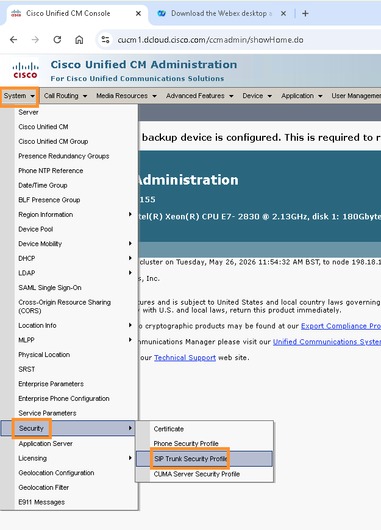
{kind=link}
3. Click Find to list all available SIP Trunk Security Profiles. Select LGW-Security-Profile and make sure the Incoming Port is configured as 5065. You’ll see the significance of this later, once we start to debug the gateway.
{kind=link}
4. Now, navigate to Device > Trunk. Click to list all available Trunks. Select the LGW-SIP-Trunk from the available trunks. On the trunk page, verify that Service Status shows as Full Service.
{kind=link}
5. Now, scroll down on trunk page to the section SIP Information and make sure that the destination address is populated, and the destination port is set to 5060. Observe that the SIP trunk Trunk security Security profile Profile is selected as LGW-Security-Profile that specifies an incoming port of 5065 is applied. This actually serves to allow Local Gateway to identify calls from UCM using a match against port 5065; The SIP Trunk security profile configuration on the UCM sets the source port of the SIP Invites to 5065 for outgoing calls from UCM. We will see this in practice later on. Multiple SIP Trunk security profiles can be set to identify different ports for different trunks for different purposes (E.g 5065 for US Internal calls, 5066 for EU Internal calls and so on)
{kind=link}
Assign numbers to users
Info
For this site, our telephony users will be Kellie Melby and Eric Steele. We must assign them the +E.164 numbers we just ordered. Eric will represent a user that has been fully migrated to Webex Calling after the switch over to cloud connected PSTN. Kellie will represent a user that has been migrated to Cloud Connected PSTN, but has not been moved off of UCM Just yet.
Webex Calling Configuration
1. Continuing on Workstation 1, Webex Control Hub. Navigate to MANAGEMENT > Users. On Users page, choose user Eric Steele.
2. On the user summary page, scroll down a little and click Edit Licenses
3. On Edit services for esteele@cbXXX.dc-YY.com page, observe that no “Webex calling professional” license is assigned. Click the Edit Licenses button

4. On the next page, go to Calling tab, check mark options for Webex Calling and Professional and click Save.

5. On the next page, drop down the option for Location and choose New York. Now drop down the option for Phone Number and choose one of the available phone numbers. Make sure you assign last four digits of the DID number as extension number.
{kind=link}
6. Once the user is assigned the DID number, navigate to SERVICES > PSTN & Routing. On the Numbers page observe that New York number would not have site routing code. We will configure in the next module.
{kind=link}
UCM User Configuration
Info
Our second user, Kellie Melby will initially reside on UCM as a Jabber user. The scenario here is that the PSTN has been ported from an on site E1/T1 connection to a cloud connected PSTN provider as the first step. PSTN is trunked through Webex Calling and on to UCM via the local gateway internal calls trunk. Users are then moved over gradually from UCM To Webex Calling.
{kind=link}
Info
PSTN trunking offers the following benefits to your organization:
Cloud PSTN migration before user migration—Organizations can transition their PSTN connectivity to the cloud before moving users to Webex Calling. This phased approach results in simplifying network architecture and lowering the cost.
Reduced infrastructure costs—Eliminates the need for multiple on-premises gateways and PSTN circuits, simplifying network architecture that lowers the cost.
Simplified integration with vertical applications—Makes it easier to connect specialized applications, such as financial turrets, nurse call system, and others, directly to the cloud PSTN without complex configurations.
Unified dial plan—Consistent extension and dial plan management across all sites and applications.
For more information on this feature, see the help.webex.com article.
1. On workstation 1, open chrome and click Collaboration Admin links, then open the UCM. Login with administrator/dCloud123! 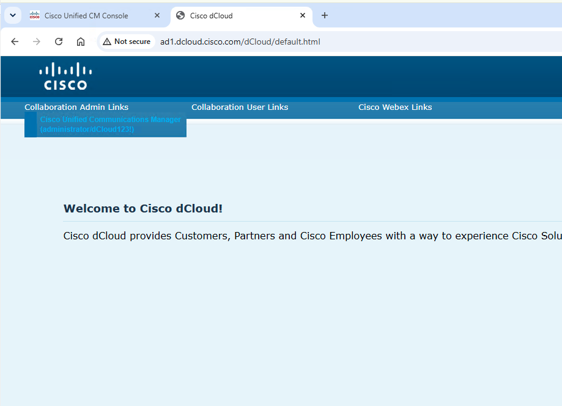
{kind=link}
2. Choose Device > Phone 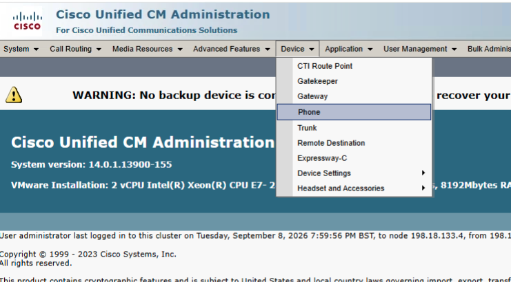
{kind=link}
3. We don’t want you to forget your UCM Administration skills, so we will create all of the UCM config to be used here. Search for device names beginning with CSF, and then super copy the CSFTBARD device 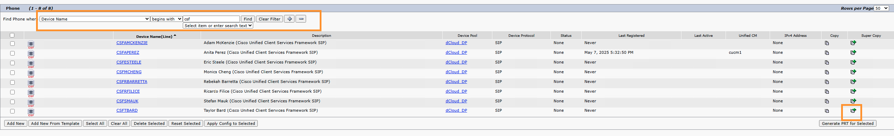
{kind=link}
4. Give the device a name of CSFKMELBY And save 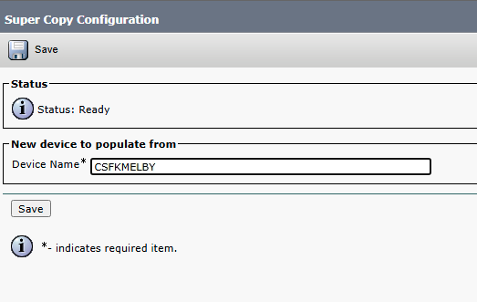
{kind=link}
5. Now adjust the following parameters to suit your user and save
| Description | Kellie Melby |
| Owner User ID | Kmelby |
| Mobility User ID | kmelby |
6. Now click on line 1 – 6026 in Base_PT 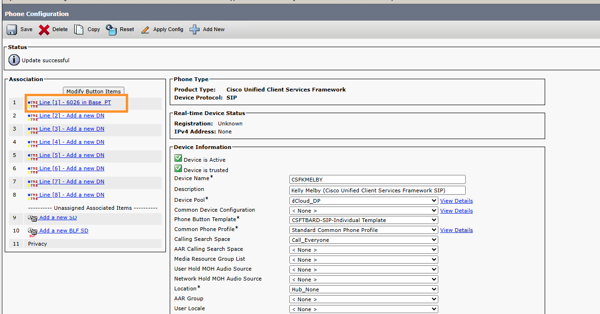
{kind=link}
7. Adjust the directory number to match the full +E.164 you have for this site in control hub. Ensure you prefix it with a \ character. Tab out of the field, and allow the page to refresh. 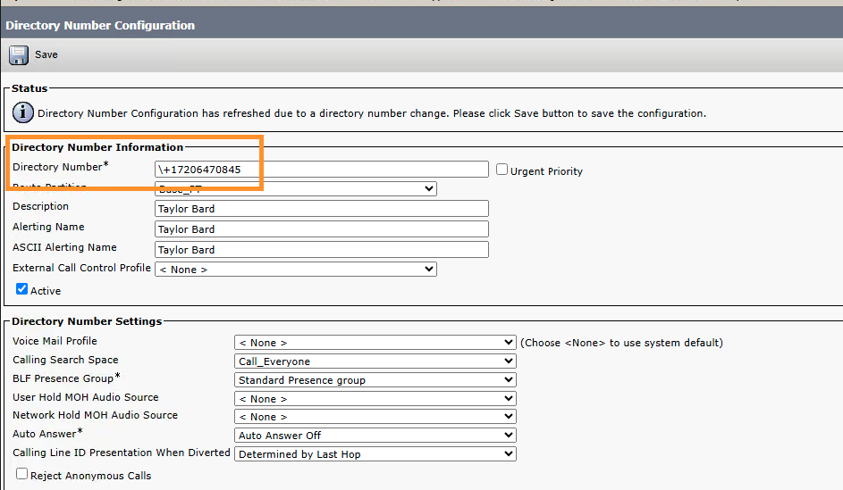
{kind=link}
8. Change all fields on the page that specify Taylor Bard to read Kellie Melby, and save the config. 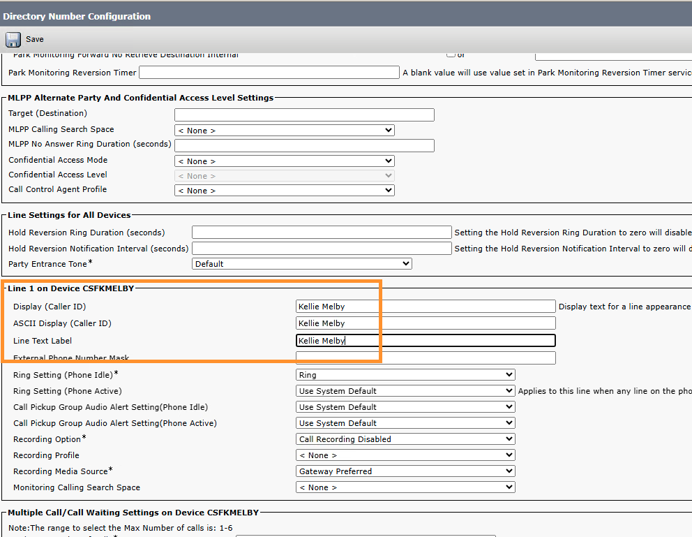
{kind=link}
9. Next, add click the “Add Enterprise Alternate Number” button and use a number mask of 42XXXX – Where XXXX is the last four digits of Charles Hollands number. We are configuring a simulated extension number overlap here between a UCM User and a Webex Calling user, which we will test later. Remember to set your Route Partition too! 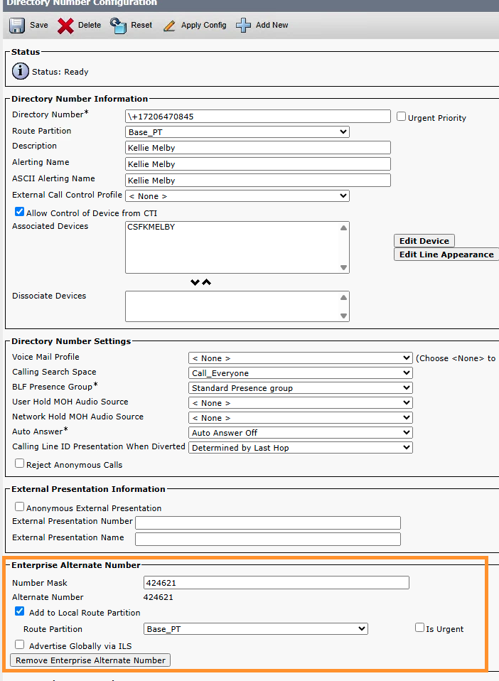
{kind=link}
10. Now select User Management > End user. 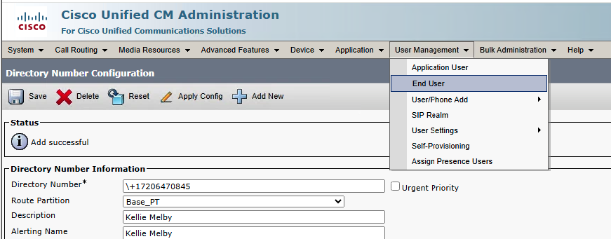
{kind=link}
11. Search for Kellie and open her profile. Click on the Device Association button. 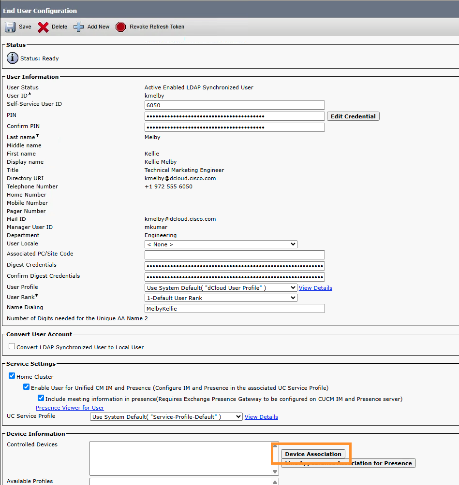
{kind=link}
12. Search for the device, tick the box next to it and save the changes. 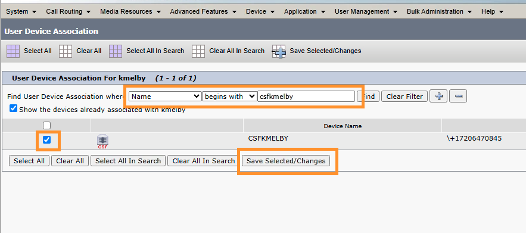
{kind=link}
13. In the top right of the screen, click the Go button next to Back to user
{kind=link}
14. Scroll down on the page, set the primary extension and then save the end user configuration 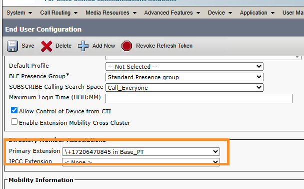
{kind=link}
15. Kellie’s Jabber configuration is now complete! Next, we must configure Webex Calling & UCM to trunk calls to her number through the trunk we created earlier; Both inbound and outbound. The users existing calling search space routes their PSTN calls out through the regular CUBE Route list. We need to send calls out through the Webex Calling Local Gateway Trunk. Click on Call Routing > Class Of Control > Partition
{kind=link}
16. Add a new partition as follows
P_CloudPSTN, Partition for Cloud PSTN Calls
{kind=link}
17. Click on Call Routing > Class Of Control > Calling Search Space and add a new one with the following properties. You’ll need to scroll down on the Available Partitions list. Click Save 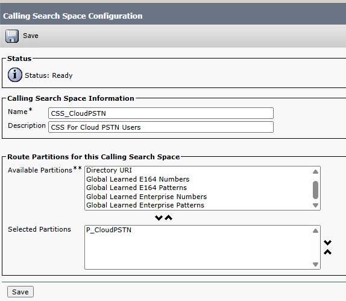
{kind=link}
18. Open Device > Phone and open the csfkmelby device 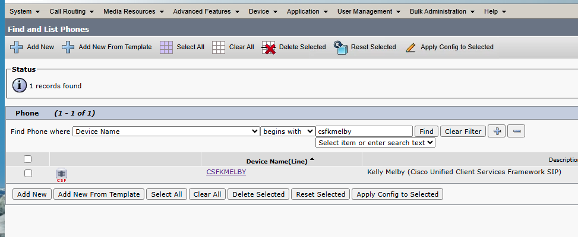
{kind=link}
19. Set the Phone Calling Search Space to CSS-CloudPSTN
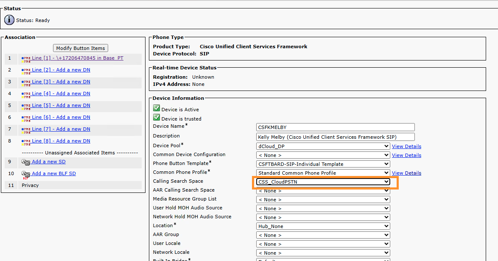
{kind=link}
20. Click on Line 1 in the top left 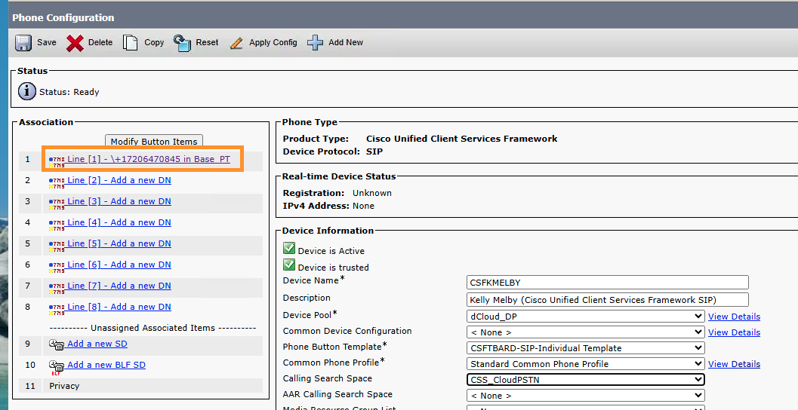
{kind=link}
21. Adjust the phone Calling Search Space to CSS-CloudPSTN and click save
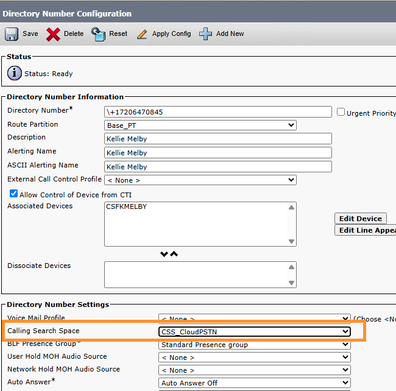
{kind=link}
22. Click on Call Routing > Route/Hunt > Route Pattern
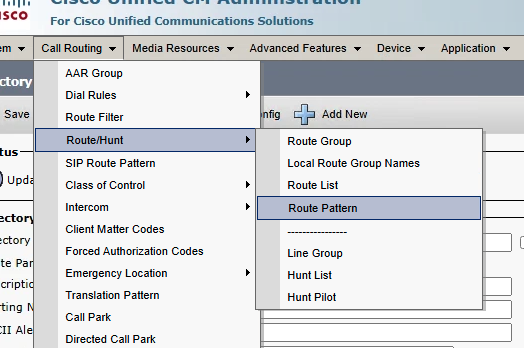
{kind=link}
23. We need to create a route pattern to point PSTN Calls over the Webex Calling Trunk. Copy the route pattern for OUTBOUND DIALLING – US – The copy button is on the far right 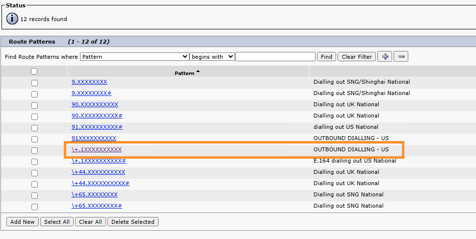
{kind=link}
24. Adjust the parameters as follows ensuring the highlighted areas match the image. Click Save and OK on the subsequent two screens. 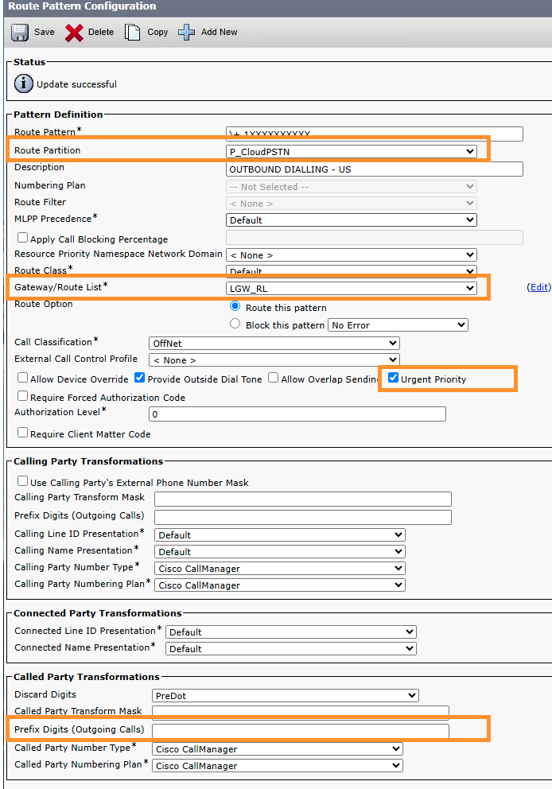
{kind=link}
25. Now, we need to configure control hub to send calls inbound from Cloud PSTN over the trunk to UCM to route to Kellie. From control hub, Navigate to PSTN & Routing > Gateway Configurations > Route Lists. Click on Create Route List
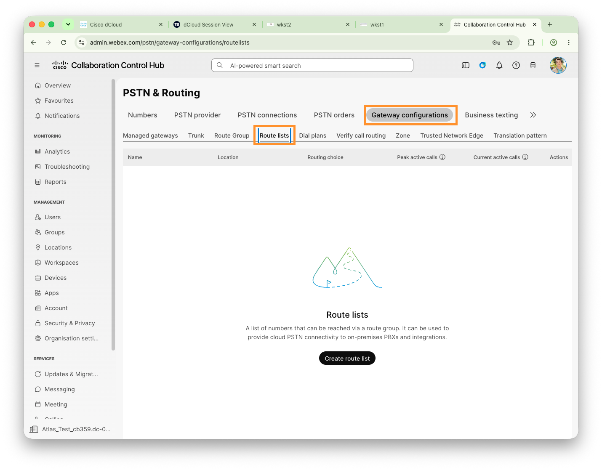
{kind=link}
26. Add your route list with the following configuration settings, and click Create
{kind=link}
27. You will be presented with a screen to add PSTN DID’s to the route list. Select the one that you have available – This tells Webex Calling to send this number over the trunk to UCM. You can add up to 100 numbers at a time manually, and it is also possible to add them in bulk via CSV. Add your number and click Add
{kind=link}
Configure Site Routing Prefix
1. Continuing on Workstation 1, Webex Control Hub. Let's define the Routing Prefix for New York location. On Webex Control Hub go to MANAGEMENT > Locations.
2. On the locations page select location New York. On New York location page go to Calling tab. On the Calling tab go to Dialing > Internal dialing. Configure Routing prefix as 43, click Save.
{kind=link}
3. Once you have added routing prefix, all users extension numbers location will be updated with respective routing prefix. To verify users extensions have been updated, on the Control Hub, go to SERVICES > PSTN & Routing and observe under Numbers tab that user extensions are updated with respective Route prefixes. Route list numbers are not.
{kind=link}
Configure Reception Virtual Line
Info
The New York site has a physical reception that will be serviced by Eric Steele. However, the PSTN Number itself is taken from the San Jose site, as the reception used to be based there until some reorganization took place a few months ago. Let’s go ahead and create the new virtual line and assign it to Eric.
1. Continuing on Workstation 1, Webex Control Hub. Navigate to SERVICES > Calling. On the Calling page go to Virtual Lines tab. On the Virtual Lines page, click Create.
{kind=link}
2. It will take you to Add virtual line page. Populate the following and click Add.
- First Name: New York
- Last Name: Reception
- Location: Drop down and choose San Jose.
- Phone Number: Choose a number from San Jose (From drop down you should see only one phone number available).
- Extension: Enter last four digits of Phone number (in this example 5744) Make a note of the extension, you will need it later.
{kind=link}
3. It will create the new virtual line, now we need to assign this line to a user. Click Assign.
4. On the next page click Assign device, it will bring Select device drop down option. Drop down the option and choose Eric Steele. Click Assign.
{kind=link}
5. On the next page, keep all default values and click Save. Observe that you have options to configure the line layout, line Label and call decline policy etc.
{kind=link}
0 For Local Reception
Info
Users wish to be able to dial 0 for a local reception desk. Let’s configure that now using a translation pattern.
1. Continuing on Workstation 1, Webex Control Hub, navigate to SERVICES > PSTN & Routing > Gateway Configurations > Translation Pattern tab. Click Create Translation Pattern.
{kind=link}
2. On the next page, keep the radio button selected for Organization and populate the following values and click Create.
- Name: Global Reception
- Matching Pattern: 0
- Replacement Pattern: 42XXXX (42 is the Site code for San Jose and XXXX is the extension number of Virtual Line you just created. In this example it will be 425744)
{kind=link}
Test Calls
Hybrid PSTN Calls
First, lets test the calls to and from our UCM User using Hybrid PSTN and see this working.
1. Open Workstation 3 and open the Jabber client. Sign in with the user ID kmelby@cbXXX.dc-xx.com
{kind=link}
2. On the next screen, enter the username kmelby and password dCloud123!
{kind=link}
3. Once signed in, confirm you see Jabber green & registered with the number assigned to you by your proctor for Cloud PSTN.
{kind=link}
4. Open your putty client on the desktop and connect to the local gateway on 198.18.133.227. Log in with the username Admin/dCloud123! Then enter the commands as follows:
terminal monitor
debug ccsip messages
{kind=link}
5. Make a call from your jabber client to Cisco TAC by dialling +18005532447. Once the call is connected, hang up and inspect the logs on the gateway. Look for the inbound call from UCM SIP Trunk
Important
From: "Kellie Melby" sip:+17206470845@198.18.133.4;tag=6302~166e7111-890f-42b6-afa8-1bcd50aa0a1e-25177042
Received:
INVITE sip:18005532447@198.18.133.227:5060 SIP/2.0
Via: SIP/2.0/TCP 198.18.133.4:5065;branch=z9hG4bK187a45d86775
From: "Kellie Melby" sip:+17206470845@198.18.133.4;tag=6302~166e7111-890f-42b6-afa8-1bcd50aa0a1e-25177042
To: sip:18005532447@198.18.133.227
Date: Thu, 10 Sep 2026 08:54:23 GMT
Call-ID: 36ae4f00-1f21caf8-187a-48512c6@198.18.133.4
Supported: timer,resource-priority,replaces
Min-SE: 1800
User-Agent: Cisco-CUCM14.0
And the outbound call from the CUBE to Webex Calling
Important
INVITE <sip:18005532447@40462196.cisco-bcld.com:5061 SIP 2.0
Sent:
INVITE <sip:18005532447@40462196.cisco-bcld.com:5061 SIP 2.0
Via: SIP/2.0/TLS 198.18.1.227:5070;branch=z9hG4bK4C8C71
From: "Kellie Melby" <sip:+17206470845@40462196.ciscobcld.com;otg=intcal2112036796\_lgu>;tag=80B7122-BAE
To: <sip:18005532447@40462196.cisco-bcld.com>
Date: Thu, 10 Sep 2026 08:54:17 GMT
Call-ID: A426BE2-AC2C11F1-8E83C856-E935BF30@198.18.1.227
Supported: 100rel,timer,resource-priority,replaces
6. This completes the testing for our outbound call leg from UCM, through Webex Calling and out to our Cloud PSTN Provider. Now lets test inbound. Issue the show run command and scroll using space bar until you see the configuration that looks something like the below. The bold part will change in your deployment. This command identifies the trunk we configured earlier.
voice class uri 301 sip
pattern dtg=intcal2112036796_lgu
7. Make a call from your cellphone to Kellie’s PSTN number, and check the debugs on the gateway again. Notice the highlighted area in red – this identifies the trunk the call was received on.
Important
transport=tls;dtg=intcal2112036796_lgu SIP/2.0
Received:
INVITE sip:+17206470845@198.18.1.227:5070;transport=tls;dtg=intcal2112036796_lgu SIP/2.0
Via:SIP/2.0/TLS 144.196.250.30:8934;branch=z9hG4bKBroadworksSSE.-64.100.13.26V44034-0-100-1909562606-1789030815502-
From:"Carl Newton"<sip:+442045202476@144.196.250.30;user=phone>;tag=1909562606-1789030815502-
To:<sip:+17206470845@40462196.cisco-bcld.com;user=phone>
8. Now find the configuration that looks like this. This command associates the trunk identifier above with this dial peer – so it gets selected as the incoming dial peer when we receive a call from Webex destined for the UCM User as their PSTN connection. At this point, it is is an internal call between systems.
dial-peer voice 300 voip
description WxC Side Internal Dial Peer for UCM<>WxC Flow
max-conn 250
destination-pattern BAD.BAD
session protocol sipv2
session target sip-server
destination dpg 301
incoming uri request 301
voice-class codec 99
voice-class stun-usage 200
no voice-class sip localhost
voice-class sip tenant 300
dtmf-relay rtp-nte
srtp
no vad
Hybrid User Extension Number Overlap
Earlier we configured Kellie to have extension number overlap with a user on Webex Calling. Lets take some time to look at how this affects users at different sites.
1. Open Workstation 2 and ensure Webex is logged in as Eric Steele
2. Dial the 4 digit number for Kellie Melby. It’s reasonable to expect that Eric would want to contact Kellie and not Charles, seeing as they work at the same office. Notice the call is actually delivered to Charles Holland since we have extension number overlap! Webex Calling is only aware of Charles Holland having this extension number locally.
3. From control hub, click on Calling > Settings and toggle the “allow extension number dialling between locations” to off. Click Save.
{kind=link}
4. Try our call again from Eric Steele, Workstation 2. Notice our call now fails, since we disallowed dialling between sites. Webex calling now only searches Eric Steeles local site for a match, and it does not find one because Kellie is registered to UCM.
5. Open Locations > New York then click on Calling > Internal Dialing
{kind=link}
6. Set the Calls to on-premises extensions parameter to enabled, and select our internal Route Group. This tells Webex calling to route anything it doesn’t recognize over the trunk you select, effectively routing calls for this use case over to UCM.
{kind=link}
7. Now dial the full 6 digit number for Kellie from Eric Steeles Webex client. You should see the call arrive at Kellies Jabber client. Our calls are routing properly! But there is a little more to do.
8. If we dial the four digit number from Eric Steele, the call will get delivered to UCM – but we configured the 6 digit extension on Kellie’s Jabber client. We need to configure a translation pattern to account for this. We could just add a translation pattern for Kellie’s specific DN, but let’s make it scalable. Log into UCM And click on Call Routing > Class Of Control > Partition and add a new one.
{kind=link}
9. Configure it as follows and click Save
{kind=link}
10. Click on Call Routing > Class Of Control > Calling Search Space and add a new one.
{kind=link}
11. Configure it with the following settings, ensuring the Site Xlat partition is on top. Click Save
{kind=link}
12. Add another calling search space as follows
{kind=link}
13. Select Device > Trunk , Click Find and open the Webex Calling LGW Trunk.
{kind=link}
14. Scroll down the the Inbound Calls section and change the Calling Search Space to your new InboundGW CSS. Click Save
{kind=link}
15. Click the Reset button at the top, and Reset Again on the resultant screen.
{kind=link}
16. Click Call Routing > Translation Pattern and add a new one
{kind=link}
17. Configure it with the settings as pictured below.
Curious
The goal of this translation pattern is to catch any inbound call from the local gateway that has a destination of four digits. We then Route next hop by calling party number which will match based on the callers number. The next step is to implement a logic of “If a caller calls four digits from +1-123-456-7890 then they are a member of the New York Site, so translate to 43XXXX. If they call from +1-456-789-1234 they are a member of the San Jose site, so translate to 42XXXX”
Once you have populated the details, click Save
{kind=link}
18. Add another calling search space with the settings as follows. Note that +1720647XXXX is the DID Range for our New York site in this example.
{kind=link}
19. Now return to Eric Steele’s Jabber client and dial the 4 digit extension, notice the call is now delivered to Kellie’s Jabber client!
Migrate UCM User To Webex Calling
Info
Next, lets step through what happens when we want to move the UCM Based user over to Webex Calling.
1. It’s a good idea to move a user over to Webex Calling without removing their UCM config, until we can confirm everything is working at least. We want to retain some kind of backout plan. To do this, lets create a partition that hides the users directory number. Open the Call Routing > Class Of Control > Partition Menu
{kind=link}
2. Add a new partition as follows
{kind=link}
3. Open Call Routing > Route Plan Report
{kind=link}
4. Search for patterns that begin with +1720647 and open the one assigned to Kellie Melby
{kind=link}
5. Change the route partition to Hidden
{kind=link}
6. Scroll down and do the same for the enterprise alternate number. Click Save
{kind=link}
7. Apply the config and click OK in the resulting window
8. Next, open control hub, and select PSTN & Routing > Gateway Configurations > Route Lists then click the 3 dots and delete the route list. NOTE: This deletes the entire route list, which can be useful if you structure your route lists by migration batches. Otherwise, you may need to open the route list and delete individual patterns from it. Your PSTN numbers will not be available to assign to users until they’ve been deleted from their route list.
{kind=link}
9. Now select Users and open Kellie Melby’s account. Click the “Edit Licenses” button
{kind=link}
10. Click Edit Licenses again on the resulting screen, then select Calling and tick Webex Calling Professional license and Save
{kind=link}
11. Next, assign the only free number from the New York location – And remember Give Kellie the same 4 digit directory number as Charles Holland! Then click Save
{kind=link}
12. Open Control Hub and Go to Calling > Settings and re-enable Allow Extension Dialling Between Locations – We are returning this parameter to the default setting before testing further.
{kind=link}
Webex Calling Inter Location Dialing
Info
Now our Webex calling user configuration is mostly complete for this site, lets pause for a moment to see how our internal dial plan is functioning and explore one of the options we have available. Remember, the user accounts use the domain suffix from your dCloud session and the password of dCloudXXXX! Where XXXX is the last four digits of your session ID.
1. Ensure Eric Steele is logged into Webex on Workstation 2 now. The username will be esteele@cbXXX.dc-YY.com and the password will be the same as Anita’s; You can get it from the session info file on the desktop. Observe that you can see both his primary line, and the reception line we created earlier on
2. Open Workstation 3 from the dCloud session using either WebRDP or RDP Application, the same as you have been accessing Workstation 1 and 2
{kind=link}
3. Open the Webex application and ensure Kellie Melby is logged in to Webex. The details are on the desktop in the Session_Info.txt file
4. Next, go to PSTN & Routing > Numbers. Observe that Kellie Melby and Charles Holland currently have the same four digit extension number, representing extension number overlap
{kind=link}
5. Dial the four digit extension number from Workstation 2, Eric Steele. Observe that the call is delivered to Kellie Melby, as they are in the same location. If you have issues, you may need to sign out and back in to Webex to make the earlier configuration take effect.
{kind=link}
6. Now go to Control Hub. Open Users page and select Kellie Melby. Go to the calling tab, and change her extension to match the last four digits of her full DDI by clicking the existing extension and changing the value. We are removing extension number overlap to see what happens to our dialing habits
{kind=link}
{kind=link}
7. Dial the original extension number from Eric Steele again. Note the call now routes to Charles Holland, and the extension shows as the full 6 digit number!
{kind=link}
Curious
This is because the setting “allow extension dialing between locations” is enabled by default. This setting controls if a user can dial between sites without a site code, with preference being given to a local site match. This is why Eric got Kellie the first time, because she is within the same site as Eric. Once Kellie’s number changed, we routed to Charles in a different site instead; Even though we didn’t dial the site routing prefix for New York
8. From control hub, Open the calling menu, and click on the settings tab.
9. Disable the “Allow extension dialling between locations” and save the configuration.
{kind=link}
10. Try your call again. This time, the call will not be delivered to Charles Webex client, because we didn’t dial the full 6 digit number including the site code for Charles Holland.
11. Now, dial Charles holland using 6 digit dial, 42XXXX and observe the call succeeds. Observe that now you MUST dial 42XXXX, since this is a cross-location call. Dialing only 4-digits will no longer work. This is an important setting to remember for deterministic routing in extension number overlap situations!
{kind=link}
Info
Imagine a scenario where User A, who is in Site 1, dials the digits 1001 (I.e does not include any site routing code) Let’s explore what User A will experience, in the following configuration scenarios, where we might have extension overlap between sites, and how the settings for allowing extension dialing between sites affects call routing (On = Allow; Off = Disallow). See the help.webex.com article for more information. Configure Webex Calling Dialplan
User A in site 1 dials 1001:
| No. | User B | User C | User D | Setting | Result |
| 1 | 1001 in Site 1 | Not Configured | Not Configured | On or Off | A will call B |
| 2 | 1001 in Site 1 | 1001 in Site 2 | Not Configured | On or Off | A will call B |
| 3 | Not Configured | 1001 in Site 2 | Not Configured | On | A will call C |
| 4 | Not Configured | 1001 in Site 2 | Not Configured | Off | The call fails |
| 5 | Not Configured | 1001 in Site 2 | 1001 in Site 3 | On | A will call C/D |
| 6 | Not Configured | 1001 in Site 2 | 1001 in Site 3 | Off | The call fails |
Note: Scenario 5 will call either User C or User D unpredictably; you should avoid this when possible.
Dial 0 for Webex Calling Reception
Now let’s test our 0 for reception pattern. Dial 0 from Charles Holland on Workstation 1 and note the call gets delivered to Eric Steeles Webex client. Take a deep breath, this is the only test scenario in this entire lab with a single step!
{kind=link}
Inter Webex Calling & UCM Calls
Unknown Extension Trunk
1. Now we want to test internal calls between Webex Calling and UCM Users. Since we already did some real world testing, let’s leverage a tool we have to inspect our call routing – similar to dialled number analyzer. From Control Hub, go to PSTN & Routing >Gateway Configurations > Verify Call Routing
{kind=link}
2. Select Charles Holland as the user. Enter a call destination of 6026. This is a four digit extension number defined for user Taylor Bard on UCM. Click See Routing Result and note the result is the call is rejected
{kind=link}
3. Repeat this process for Kellie as the source too, note the call is routed as an unknown extension because we set up the trunk for it at the location level. Remember this is a site specific setting if you ever need to troubleshoot!
{kind=link}
4. Open locations, and select the San Jose location. Go to the calling tab, and open the internal dialing section.
{kind=link}
5. Note the parameter at the bottom “Calls to on-premises extensions”. Set this to on, and select the internal trunk route group you created earlier. Remember to save the configuration! This is functionally the same as a match all route pattern for internal extensions that you may have set on UCM in the past, designed to route unknown extensions that aren’t configured locally to a specific system.
{kind=link}
6. Note that you must set the unknown extension trunk individually per site, so repeat the process for any further sites you configure We allow this granularity because media will anchor to the gateway this trunk is attached to, so each location should be able to choose its own for optimal media routing.
{kind=link}
7. Use verify call routing again to show 4 digit calls now are sent over the trunk via the RG_Internal we created earlier
{kind=link}
8. The user we want to dial on UCM is Taylor Bard on DN 6026. Taylor is a member of the London Site that we didn’t migrate yet – so the 6 digit number is 446026. Enter this into verify call routing and observe the call is also sent across the internal route group
{kind=link}
9. Now do the same for the 7 digit number 4416026. Notice the call is sent to PSTN as a valid destination! We will explore why this happens in the PSTN Routing section.
{kind=link}
10. Now repeat this again for an 8 digit number, 44116026. Notice the call is rejected! 8 digit numbers like this are not valid PSTN destinations in the USA dial plan, so Webex Calling does not know how to handle this call. We will explore this in the Maximum Unknown Extension Length Section.
{kind=link}
Webex Calling & PSTN Routing
Curious
In UCM, we used to decide which digit patterns were routed to PSTN. In Webex Calling, the PSTN Dial plan is pre configured for every country we support. We never need to tell Webex calling which calls should go to PSTN, our dial plan handles this automatically and sends calls to the configured PSTN Connection if it is a PSTN Number. This can introduce some intricacies in UCM co-existence scenarios; But don’t worry, we have tools to manage that!
Info
We just configured the feature that allows us to set a destination trunk for unknown extension numbers to route to in the case that no other matches are found. The idea of this is that when a Webex Calling MT user dials an unknown number that looks like an extension number, we route it to UCM. See the following decision tree diagram for information on how we decide where to route these calls.
{kind=link}
Lets step through the logic in the diagram above, analyzing a scenario where a user on Webex Calling wants to dial a UCM based user over the New York Internal trunk. This UCM based user breaks our 6 digit dial plan and is using a 7 digit extension number of 4416026.
- Charles looks up a user in the directory, their extension is 4416026. He dials that user.
- Webex calling analyses the dialed digits. This is not an Emergency pattern, pass to the next gate.
- There is no configured translation pattern (TP) match for 4416026, pass to the next gate.
- The outbound dial digit does not exist, pass to the next gate.
- There is no internal match configured within Webex Calling, pass to the next gate.
- NS Lookup finds that 4416026 matches the XXXXXXX Local Calls pattern for North America PSTN Numbering plan, send the call out of PSTN!
{kind=link}
Our goal is to have this route over to the UCM Via the trunk. First, we have to understand our unknown extension number handling logic.
Maximum Unknown Extension Length & PSTN Routing
1. Let’s imagine for a second that we have some UCM Based users that have 8 digit extension numbers. We just used verify call routing for a number 44116026 and noticed that this call was rejected.
2. This is because of the parameter that governs the maximum unknown extension length. The default is 6, so an 8 digit number is not valid for routing as an unknown extension number.
3. Go to Calling Menu, and settings. Scroll down to the Maximum unknown extension length setting, and set it to 8 digits. Save the configuration
{kind=link}
4. Go back to PSTN & Routing, Gateway Configurations, Verify call routing, and check our routing again to 44116026. Notice now the call now routes as an unknown extension over to UCM via our gateway, trunk and route group configuration we set up earlier! Great!
{kind=link}
5. Now change your called number to 4416026, a 7 digit number. Notice now the call still routes to an external number via PSTN! Why isn’t this routing as an unknown extension?
{kind=link}
Curious
The length of unknown extensions can be anything from 2-10 digits. It is important to set this accurately, since some countries such as the USA have nonspecific PSTN Dial plans that route 7 digits to PSTN, such as XXXXXXX. Using the example of Germany, any number from 5 digits in length, all the way up to 13 digits in length constitutes a valid destination for PSTN routing! So how do we route to internal unknown extension numbers in that scenario? With what we just learned, it would seem that all of our internal users would be pushed to PSTN instead of over the trunk to UCM! See a screenshot of the Germany PSTN dial plan below.
{kind=link}
In a production environment, we need to mitigate this PSTN/Internal dial plan overlap by enforcing outbound dial digit, and /or setting the maximum valid length for an internal call. Some countries can get by with correctly setting the maximum unknown extension length, others will require outbound dial digit enforcement. It depends what their PSTN dial plan looks like.
In our example, we fixed the 8 digit extension problem, but 7 digit numbers are still going out of PSTN because it’s a valid PSTN destination in the USA. Let’s dive into this now!
9. You can check the country specific dial plan document to check for overlaps in real world scenarios. Open the page, and have a look at the North American numbering plan now and find the 7 digit PSTN pattern we are hitting here
10. We’re in a good spot for everything except our 7 digit internal routing. How do we fix this? Let’s turn on outbound dial digit enforcement! Open your San Jose location and go to the calling tab then External dialing.
{kind=link}
11. Set the outbound dial digit to 9 and enable enforcement. Repeat this for the New York site. We cannot set this for Dallas & London yet, as we have not configured calling for them.
{kind=link}
12. Note: Setting the outbound dial digit without enforcement makes the outbound dial digit permissive, which will not fix our problem since we still have a 7 digit match. See the below table to see which dial strings will be forwarded to PSTN for a USA Site.
| Dial Digit | Enforcement | Valid PSTN Dial Strings |
| 9 | Enabled | 9-476-2428 |
| 9 | Disabled | 9-476-2428 476-2428 |
13. Open PSTN & Routing, Gateway Configurations, Verify Call Routing, Choose Charles Holland as the source and enter the 7-digit number 4416026. Note it now routes internally as an unknown extension, since our maximum unknown extension length is 8 digits, and we didn’t dial the outbound dial digit of 9 to indicate it’s a PSTN Call
{kind=link}
14. Check again with a 9 at the front. Note the call goes to PSTN now!
{kind=link}
Info
Let’s step through our destination selection scenario again to understand this process.

- Charles looks up a user in the directory, their extension is 4416026. He dials that user.
- Webex calling analyses the dialed digits. This is not an Emergency pattern, pass to the next gate.
- There is no configured translation pattern (TP) match for 4416026, pass to the next gate.
- The outbound dial digit (ODD) does not exist, pass to the next gate.
- There is no internal match configured within Webex Calling, pass to the next gate.
- We don’t have outbound dial digit present and enforcement is enabled. Don’t check NS Lookup patterns for PSTN routing, Number is unknown
- We invoke route unknown extensions to premises configuration, and call is pushed over the internal calling trunk to our local gateway connected to UCM.
We have now set up our UCM-Webex Calling internal calls trunk. In practice, remember to consider the interactions between maximum unknown extension length, the default PSTN dial plan, and enforce outbound dial digit configurations.
Real Test Calls
1. Leave Webex open as Charles Holland, and Open Jabber on Workstation 1. Login as Taylor Bard, tbard@cbxxx.dc-xx.com (Remember to swap out your specific domain suffix)
{kind=link}
2. On the next screen, enter the username tbard and the password of dCloud123!
{kind=link}
3. Open the local gateway via Putty and log in. Enter the “show run” command and press enter. You should see the configuration – press space 7 or 8 times to scroll down to the area that looks something like the below. The red part will change in your deployment according to your trunk name.
voice class uri 301 sip
pattern dtg=intcal0729693267_lgu
{kind=link}
4. Now find the configuration that looks like this by pressing space a few more times; Note that the dial peer is selected when the incoming URI matches 301 – Which is the command we just saw that references the internal calls trunk.
dial-peer voice 300 voip
description WxC Side Internal Dial Peer for UCM<>WxC Flow
max-conn 250
destination-pattern BAD.BAD
session protocol sipv2
session target sip-server
destination dpg 301
incoming uri request 301
no voice-class sip localhost
voice-class sip tenant 300
dtmf-relay rtp-nte
srtp
no vad
5. Press q to exit out of the configuration display mode. Issue the commands below and press enter after each one
debug ccsip messages
terminal monitor
6. Dial 6026 from another users Webex Client. You should see the call arrive on Taylors Jabber client. Take a look on your local gateway for the Received SIP Message – There will be quite a few messages, but you want to see the one that starts with the text that's in bold below. It will be one of the first messages. Note the dtg that matches the voice class we looked at above! Which then matches the incoming uri statement on the dial peer. This is how CUBE identifies the dial peer to receive the call on. If you want to go deeper on this, check the bonus content we will share with you; but we recommend completing the lab fully before you do this due to time constraints.
Info
If you find the terminal jumps around before you can find things, issue the command
terminal no monitor
This will stop the debugs coming in. Remember to turn it on again before the next tests!
Code
Received:
INVITE sip:6026@198.18.1.227:5070;transport=tls;dtg=intcal0729693267_lgu SIP/2.0
Via:SIP/2.0/TLS 150.253.153.83:8934;branch=z9hG4bKBroadworksSSE.-64.100.12.5V7654-0-100-1675611455-1779276320297-
From:"Charles Holland"<sip:426014@150.253.153.83;user=phone>;tag=1675611455-1779276320297-
To:<sip:6026@40462196.cisco-bcld.com;user=phone>
{kind=link}
7. Let’s test in the other direction. Open Chrome on the desktop of workstation 1, and open the UCM from the Collaboration Admin Links section. The username is administrator and the password is dCloud123!
8. Go to Call Routing, Route/Hunt and then Route Pattern.
{kind=link}
9. Add a New one as follows. We want to ensure numbers are passed to Webex Calling in +E.164 format at all times. Note that in a real deployment, you would use less specific patterns to match entire groups of users.
Important
You must switch out the relevant route pattern and called party transform mask to match your own deployment here, otherwise calls will fail. You can get Charles +E.164 by clicking the avatar on his Webex Client
| Route Pattern | Charles Hollands DN E.g 3304 |
| Route Partition | Base PT |
| Gateway/Route List | LGW_RL |
| Called Party Transform Mask | Charles Holland’s +E.164, E.g +1209821XXXX |
10. Go back to your gateway and use the show run command to find and observe the following configuration. It’s a few lines down from the big list of IPv4 statements. This is a regular expression that matches anything in the range of 198.18.133.X subnet using port 5065.
voice class uri 101 sip
pattern 198\.18\.133\..\*:5065
11. Press q to exit out of the configuration display mode. Issue the commands below and press enter after each one
debug ccsip messages
terminal monitor
12. Now make a call from Taylor Bard’s jabber client to the 4 digit number you just configured for the Route pattern
13. Check your local gateway again and find the first invite for this call. Note the part in bold that shows the port of 5065; This is how cube identifies the call is incoming from UCM according to voice class uri 101 above.
Info
If you find the terminal jumps around before you can find things, issue the command
terminal no monitor
This will stop the debugs coming in. Remember to turn it on again before the next tests!
Code
Received:
INVITE sip:+12792386014@198.18.133.227:5060 SIP/2.0
Via: SIP/2.0/TCP 198.18.133.4:5065;branch=z9hG4bK178576b2d95
From: "Taylor Bard" <sip:6026@198.18.133.4>;tag=6051~166e7111-890f-42b6-afa8-1bcd50aa0a1e-19692354
To: <sip:+12792386014@198.18.133.227>
{kind=link}
Info
In a real deployment, you would also configure extra route patterns for 6 digit and +E.164 routing on UCM, but this is a Webex Calling lab - so in the interests of time we will not do this in this lab.
Webex Calling To UCM E.164 Call Routing
Curious
Unknown extension length routing and outbound dial digit enforcement does not cater for on net E.164 routing. For this, we must use dial plans. Note that dial plans are Organization wide in scope, so anything you add as a routing trunk target will be set as such for every user in the MT org. Unknown extension number routing, however, is site specific.
Important
Do not use dial plans for real PSTN Routing! It is only for on-net destinations and will cause catastrophic call routing failures if used improperly!
Info
Let’s imagine our customer owns the PSTN DDI Range +1294321602X and it is currently servicing users on UCM. The internal extension range of 602X is catered for already by our unknown extension number routing settings. However, the +E.164 patterns will currently route to PSTN, because they are valid patterns! Let’s test this out now.
1. Open control hub, Select PSTN & Routing, Gateway Configurations and choose Verify call routing. Enter a source user of Kellie Melby, and a destination of Taylor Bard on their full +E.164 DDI +12943216026. Observe that this call actually goes out of the PSTN connection!
{kind=link}
2. We actually want this number range to route over our internal trunk. Select PSTN & Routing, Gateway Configurations and then Dial Plans. Click the button to create a new one.
{kind=link}
3. Add a new dial plan as the screenshot shows. Note: We will stress again, these dial plans are organization wide and must be configured in a very specific and granular manner with only the exact ranges the customer owns; Accidental inclusion of ranges that customers do not own will break PSTN routing for the given numbers. In the below example, adding +129432160XX will route 100 DDI’s to UCM, instead of 10 – preventing every user on WxC MT from dialing the PSTN numbers that the customer does not actually own. We want to add only +1294321602X
{kind=link}
4. Navigate again to PSTN & Routing, Gateway Configurations and verify call routing. Enter a source of Kellie and a destination of Taylor’s +E.164 number +12943216026 to see these numbers routed over the internal trunk to UCM; via the dial plan we just created.
{kind=link}
5. Open the UCM Admin page again, Call Routing and then Route Plan Report.
{kind=link}
6. Search for pattern 6026 and open the number by clicking on it on the Pattern or URI Column. Earlier on in this lab, we added Kellie’s Jabber client with a +E.164 DN. Taylor has a 4 digit DN; You can use either method given to support whatever you currently have in your environment.
{kind=link}
7. Scroll down and click the button to add an +E.164 Alternate Number. A new section will appear.
{kind=link}
8. Configure the number mask +1294321XXXX. Add it to local route partition Base_PT and save the config. This associates the full +E.164 number with Taylor’s Jabber line. In your deployment, this may already be done via a different method.
{kind=link}
9. Dial +12943216026 from Charles Hollands Webex client, and observe the call is delivered to Taylor Bard’s Jabber client. The connected party ID will show as 6026 because we didn’t configure connected party transformations in this lab; but we dialed the full +E.164 number and the call connected.
{kind=link}